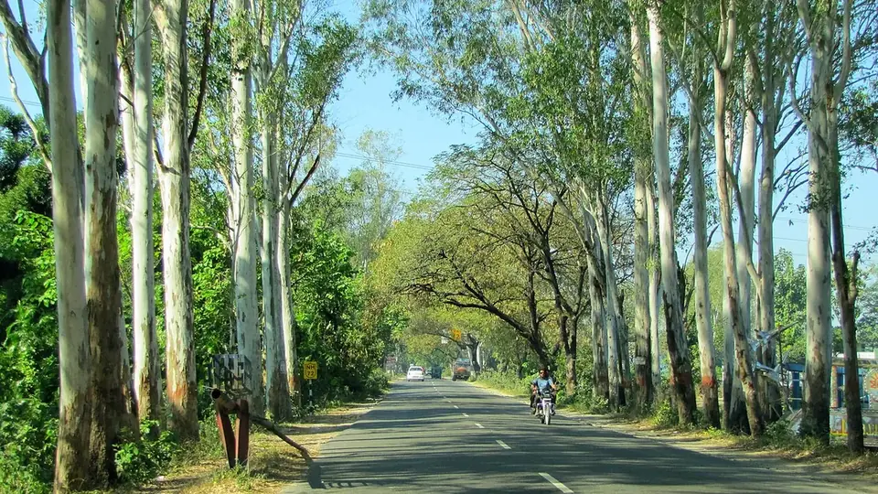

🌳 बंजर व सेम वाली ज़मीन🗓️ रोपाई: जून–अगस्त⏱️ 4–6 साल
यूकेलिप्टस (सफेदा) की खेती
Eucalyptus Farming — Clones, Coppicing & the Water Question
सफेदा 4–6 साल में कट जाता है, मवेशी इसे नहीं खाते, और एक बार लगाकर 2–3 बार काटा जा सकता है। पर इसे कुएँ के पास लगाना उतनी ही बड़ी गलती है जितनी बंजर ज़मीन पर लगाना समझदारी।
✍️ Kunal Rajput — KrashiMitra⏱️ 11 मिनट पढ़ें📅 अगस्त 2026

देहरादून के पास सड़क किनारे खड़े यूकेलिप्टस — सीधा तना और तेज़ बढ़वार इसकी पहचान है।
बुरा पेड़ नहीं — गलत जगह लगाया गया पेड़
💧
कुएँ के पास
यहाँ मत लगाइए
📏
440–1000
पेड़ प्रति एकड़
🔁
2–3 कटाई
एक ही रोपाई से
📖
भूमिका
यूकेलिप्टस — जिसे उत्तर भारत में सफेदा और कहीं-कहीं नीलगिरी कहा जाता है — शायद भारत का सबसे विवादित पेड़ है। एक तरफ यह 4 से 6 साल में कट जाता है, कम पानी और खराब ज़मीन में भी चल जाता है, और कागज़ मिलों में इसकी पक्की माँग है। दूसरी तरफ इस पर आरोप है कि यह ज़मीन का पानी सोख लेता है।
सच दोनों के बीच में है, और वह किसान के लिए जानना ज़रूरी है। यूकेलिप्टस उन गिने-चुने पेड़ों में है जो ऊसर, बंजर और खेत के उस कोने में भी खड़ा हो जाता है जहाँ फसल नहीं होती — और यही इसकी असली जगह है। पर इसे नहर के किनारे, कुएँ के पास या पड़ोसी के खेत की मेड़ पर लगाना झगड़े और पानी दोनों की समस्या खड़ी करता है। इस लेख में क्लोन का चुनाव, दूरी, कॉपिसिंग (एक बार लगाकर तीन बार कटाई), कागज़ मिल का बाज़ार और पानी वाले सवाल का सीधा जवाब।
विज्ञापन
💧
"यूकेलिप्टस पानी सोख लेता है" — इसका सीधा जवाब
यह सवाल हर किसान के मन में आता है, इसलिए इसे शुरू में ही साफ कर लेते हैं।
यूकेलिप्टस तेज़ बढ़ने वाला पेड़ है, और तेज़ बढ़वार के लिए पानी चाहिए ही — इस हद तक बात सही है। प्रति किलो लकड़ी बनाने में यह कई पेड़ों जितना ही पानी लेता है, पर चूँकि यह बहुत तेज़ बढ़ता है, एक ही साल में इसकी कुल खपत ज़्यादा दिखती है। असली दिक्कत तब बनती है जब इसे पहले से पानी की कमी वाले इलाके में, घनी संख्या में, बड़े रकबे पर लगा दिया जाए।
समझदारी: इसे ऊसर, बंजर, नाले के किनारे और उस ज़मीन पर लगाइए जहाँ वैसे भी फसल नहीं होती। वहाँ यह शुद्ध फायदा है।
बचें: कुएँ, तालाब, बोरवेल या पीने के पानी के स्रोत के बिल्कुल पास बड़ी संख्या में लगाने से।
पड़ोसी का ध्यान: मेड़ पर लगाने से पड़ोसी के खेत की नमी और फसल दोनों प्रभावित होती है — गाँवों में इसी बात के सबसे ज़्यादा झगड़े होते हैं। लगाने से पहले बात कर लेना बेहतर है।
जहाँ पानी ज़्यादा है वहाँ यह वरदान है: जलभराव और सेम (waterlogging) वाली ज़मीन सुखाने के लिए यूकेलिप्टस का उपयोग होता रहा है।
💡
एक वाक्य में: यूकेलिप्टस "बुरा पेड़" नहीं है, गलत जगह लगाया गया पेड़ बुरा होता है। बंजर और सेम वाली ज़मीन पर यह सबसे उपयोगी विकल्प है; सूखे इलाके के सिंचित खेत के बीच यह मुसीबत है।
✅
यूकेलिप्टस की तीन असली खूबियाँ
सबसे कम देखभाल: जड़ पकड़ लेने के बाद यह लगभग अपने आप बढ़ता है। मवेशी इसकी पत्तियाँ नहीं खाते, इसलिए चराई का नुकसान बहुत कम होता है — यह छोटे किसान के लिए बड़ी राहत है।
जल्दी कटाई:4 से 6 साल में कागज़/पल्प के लिए कटाई लायक हो जाता है। सागौन के 20–25 साल के मुकाबले यह बहुत जल्दी है।
कॉपिसिंग — एक बार लगाओ, तीन बार काटो: यह इसकी सबसे बड़ी और सबसे कम जानी जाने वाली खूबी है। कटाई के बाद बचे ठूँठ से नई कोंपलें फूट पड़ती हैं, और दोबारा पौध लगाए बिना ही अगली फसल तैयार हो जाती है। आम तौर पर एक बार रोपाई से 2 से 3 बार कटाई ली जा सकती है, जिससे दूसरी और तीसरी फसल की लागत बहुत घट जाती है।
🌱
क्लोन, दूरी और रोपाई
पुराने ज़माने के बीज से उगाए यूकेलिप्टस और आज के क्लोनल यूकेलिप्टस में ज़मीन-आसमान का फर्क है। क्लोनल पौधे एक चुने हुए अच्छे पेड़ की कलम से बनते हैं, इसलिए पूरे बागान की बढ़वार एक जैसी और सीधी रहती है। हमेशा अपने इलाके के लिए संस्तुत क्लोन ही लें — किसी दूसरे राज्य में सफल क्लोन आपके यहाँ वैसा नहीं चलता। क्लोन का नाम अपने कृषि विज्ञान केंद्र (KVK), वन विभाग या नज़दीकी कागज़ मिल की वानिकी शाखा से पूछें; कई मिलें खुद किसानों को क्लोनल पौध देती हैं।
रोपाई का समय: मानसून की अच्छी बारिश के बाद (जून–अगस्त) सबसे आसान। सिंचाई की सुविधा हो तो फरवरी–मार्च में भी लगाया जाता है।
गड्ढा: लगभग 30×30×30 से 45×45×45 सेंटीमीटर; ऊपर की मिट्टी में गोबर की खाद मिलाकर भरें।
पहले साल पानी: बारिश न हो तो पहले साल 15–20 दिन के अंतर पर सिंचाई से बढ़वार बहुत सुधरती है।
निराई: पहले साल थाला साफ रखें — इसके बाद पेड़ खुद घास पर हावी हो जाता है।
दूरी
लगभग पेड़ / एकड़
किसके लिए
2 × 2 मीटर
लगभग 1000
घना बागान, सिर्फ कागज़/पल्प के लिए — पतले लट्ठे
3 × 2 मीटर
लगभग 660
सबसे आम — पल्पवुड के साथ कुछ मोटे लट्ठे भी
3 × 3 मीटर
लगभग 440
मोटाई ज़्यादा; खंभे और छोटी इमारती लकड़ी के लिए भी
मेड़ पर एक कतार
दूरी 1.5–2 मीटर
खेत की फसल चालू रखते हुए अतिरिक्त कमाई
विज्ञापन
🔁
कॉपिसिंग — ठूँठ से दूसरी फसल कैसे लें
यह वह तकनीक है जो यूकेलिप्टस को सस्ता बनाती है, और ज़्यादातर किसान इसे ठीक से नहीं करते।
कटाई ज़मीन के पास से करें: ठूँठ ज़मीन से लगभग 10–15 सेंटीमीटर ऊँचा छोड़ें। बहुत ऊँचा ठूँठ छोड़ने पर निकली कोंपलें कमज़ोर जुड़ाव वाली होती हैं और आगे चलकर हवा में टूट जाती हैं।
कटाई साफ और तिरछी हो ताकि ठूँठ पर पानी न ठहरे और वह सड़े नहीं।
कटाई का समय: बरसात से ठीक पहले या बरसात की शुरुआत में कटाई करने पर कोंपलें सबसे अच्छी फूटती हैं।
सबसे ज़रूरी क़दम — कोंपलों की छँटाई: एक ठूँठ से 10–15 कोंपलें निकल आती हैं। इन्हें ऐसे ही छोड़ देंगे तो सब पतली रह जाएँगी। कोंपलें लगभग 1–2 मीटर की हो जाएँ तब सबसे मज़बूत 2 (ज़्यादा से ज़्यादा 3) कोंपलें रखकर बाकी काट दें। यही एक काम दूसरी फसल की मोटाई तय करता है।
कितनी बार: आम तौर पर 2–3 चक्र तक अच्छी उपज मिलती है; उसके बाद ठूँठ कमज़ोर पड़ जाता है और दोबारा नई रोपाई बेहतर रहती है।
💡
कॉपिसिंग का मतलब है कि आपकी दूसरी और तीसरी फसल में पौध और रोपाई का खर्च लगभग शून्य है — सिर्फ कोंपलों की छँटाई करनी है। यही वह जगह है जहाँ यूकेलिप्टस का असली मुनाफ़ा छिपा है।
🏭
बाज़ार — कहाँ और कैसे बिकता है
यूकेलिप्टस की लकड़ी एक ही तरह की नहीं होती; मोटाई के हिसाब से अलग-अलग खरीदार हैं, और दाम भी अलग।
लकड़ी का प्रकार
खरीदार
टिप्पणी
पतले लट्ठे (पल्पवुड)
कागज़ मिल
सबसे पक्की माँग; वज़न (टन/क्विंटल) से बिकता है
मोटे सीधे लट्ठे
प्लाईवुड मिल
दाम बेहतर — इसीलिए दूरी थोड़ी ज़्यादा रखना फायदेमंद है
लंबे सीधे तने
बल्ली / खंभे / मचान / निर्माण
स्थानीय बाज़ार, नकद बिक्री
टहनियाँ व छोटी लकड़ी
ईंधन, ईंट भट्ठा, बायोमास
दाम कम, पर कुछ भी बेकार नहीं जाता
⚠️
पौध लगाने से पहले खरीदार पक्का कीजिए। पता कीजिए कि आपके ज़िले से सबसे नज़दीकी कागज़ या प्लाईवुड मिल कितनी दूर है — लकड़ी भारी होती है और ढुलाई का खर्च सीधे आपके मुनाफ़े से कटता है। कई कागज़ मिलें किसानों के साथ खेती-अनुबंध (contract/captive plantation) चलाती हैं जिसमें पौध और तकनीकी सलाह वे देते हैं; ऐसा कोई भी अनुबंध करने से पहले शर्तें, भाव तय करने का तरीका और भुगतान की अवधि लिखित में पढ़ लें। भाव इलाके और समय के अनुसार बदलता है, इसलिए 2–3 खरीदारों से खुद पूछें। कृषि मित्र कोई निवेश सलाह नहीं देता।
📜
कटाई और परिवहन के नियम
यूकेलिप्टस पॉपलर की तरह स्पष्ट रूप से किसान द्वारा लगाई गई प्रजाति है और भारत में प्राकृतिक जंगल का हिस्सा नहीं है। इसी वजह से कई राज्यों ने इसकी कटाई और परिवहन को नियमों में छूट दी हुई है, ताकि कृषि-वानिकी को बढ़ावा मिले।
छूट की सूची हर राज्य की अलग है और समय के साथ बदलती है — मान कर मत चलिए।
रोपाई का रिकॉर्ड रखें: कितने पेड़, किस खसरा/गाटा संख्या पर, किस साल लगाए।
कटाई से पहले जिला वन कार्यालय (DFO) से प्रक्रिया की पुष्टि करें — खासकर अगर माल दूसरे ज़िले या राज्य में ले जाना है, क्योंकि परिवहन पास की ज़रूरत अलग हो सकती है।
🚫
ये गलतियाँ कभी न करें
कुएँ, तालाब या बोरवेल के पास घना बागान लगाना — पानी की समस्या और गाँव में विवाद, दोनों मिलते हैं।
पड़ोसी की मेड़ से सटाकर लगाना — उसकी फसल प्रभावित होगी और झगड़ा तय है। पहले बात कर लें।
कॉपिसिंग में कोंपलों की छँटाई न करना — 12 कमज़ोर कोंपलें रखने से अच्छा है 2 मोटी। यही दूसरी फसल का पूरा मुनाफ़ा तय करता है।
बहुत ऊँचा ठूँठ छोड़ना — नई कोंपलें कमज़ोर जुड़ाव वाली बनती हैं और हवा में टूटती हैं।
खरीदार पता किए बिना बड़ा रकबा लगाना — मिल दूर हुई तो ढुलाई ही मुनाफ़ा खा जाएगी।
सिंचित उपजाऊ खेत की बीच वाली अच्छी ज़मीन इसे देना — यह पेड़ बंजर और सेम वाली ज़मीन के लिए है, वहीं इसका असली फायदा है।
अनजान बीज वाले पौधे लेना — टेढ़े-मेढ़े पेड़ मिलेंगे; क्लोनल पौध ही लें।
🗓️
साल-दर-साल — कब क्या करना है
समय
ज़रूरी काम
अप्रैल – मई
गड्ढे खोदें; अपने इलाके के लिए संस्तुत क्लोन बुक करें; खरीदार/मिल की दूरी पता करें
जून – अगस्त
बारिश के बाद रोपाई; गोबर की खाद मिली मिट्टी से गड्ढा भरें
पहला साल
थाला साफ रखें; बारिश न हो तो 15–20 दिन पर सिंचाई; मरे पौधे बदलें
2 – 3 साल
देखभाल लगभग खत्म; ज़रूरत हो तो नीचे की डालें साफ करें
हर गर्मी
बागान के चारों ओर आग से बचाव की पट्टी बनाएँ
4 – 6 साल
पहली कटाई; ठूँठ 10–15 से.मी. ऊँचा, कटाई साफ और तिरछी
कटाई के 3–6 महीने बाद
कोंपलों की छँटाई — सबसे मज़बूत 2 रखें, बाकी काट दें
अगले 4–6 साल
दूसरी फसल (कॉपिस) — बिना दोबारा रोपाई के
✅
निष्कर्ष
तीन बातें याद रखिए। पहली — जगह का चुनाव ही सब कुछ है: ऊसर, बंजर और सेम वाली ज़मीन पर यूकेलिप्टस वरदान है, कुएँ और उपजाऊ सिंचित खेत के बीच यह मुसीबत है। दूसरी — कॉपिसिंग को गंभीरता से लीजिए; ठूँठ की सही ऊँचाई और कोंपलों की छँटाई ही आपकी दूसरी-तीसरी फसल को मुनाफ़े वाली बनाएगी। तीसरी — खरीदार पहले, पौधा बाद में।
यूकेलिप्टस पर लगे "पानी सोखने" के आरोप से डरकर इसे छोड़ने की ज़रूरत नहीं है — बस इसे वहाँ लगाइए जहाँ यह किसी और की जगह न ले रहा हो।
बंजर ज़मीन पर खड़ा यूकेलिप्टस अतिरिक्त कमाई है; अच्छे खेत के बीच खड़ा यूकेलिप्टस एक फसल की कुर्बानी है।
विज्ञापन
❓
अक्सर पूछे जाने वाले सवाल
1यूकेलिप्टस (सफेदा) कितने साल में कटाई लायक होता है?
कागज़/पल्प के लिए यूकेलिप्टस आम तौर पर 4 से 6 साल में कटाई लायक हो जाता है। मोटे लट्ठे और प्लाईवुड लायक लकड़ी चाहिए तो दूरी ज़्यादा रखकर 6–8 साल तक रखा जाता है।
2क्या यूकेलिप्टस सच में ज़मीन का पानी सोख लेता है?
आंशिक रूप से सही है — यह तेज़ बढ़ने वाला पेड़ है और तेज़ बढ़वार के लिए पानी चाहिए ही। असली दिक्कत तब बनती है जब इसे पहले से पानी की कमी वाले इलाके में, घनी संख्या में और कुएँ-बोरवेल के पास लगाया जाए। ऊसर, बंजर और सेम (जलभराव) वाली ज़मीन पर यही पेड़ फायदेमंद साबित होता है।
3कॉपिसिंग क्या है और यूकेलिप्टस में यह कैसे काम करता है?
कॉपिसिंग का मतलब है कटाई के बाद बचे ठूँठ से नई कोंपलें निकलवाकर दोबारा फसल लेना — बिना नई पौध लगाए। यूकेलिप्टस में आम तौर पर 2 से 3 चक्र तक अच्छी उपज मिलती है। इसके लिए ठूँठ ज़मीन से 10–15 सेंटीमीटर ऊँचा छोड़ें और कोंपलें 1–2 मीटर की होने पर सबसे मज़बूत 2 रखकर बाकी काट दें।
4एक एकड़ में यूकेलिप्टस के कितने पेड़ लगते हैं?
दूरी के अनुसार लगभग 440 से 1000 पेड़ प्रति एकड़। 2×2 मीटर पर करीब 1000 (सिर्फ कागज़ के लिए), 3×2 मीटर पर करीब 660 और 3×3 मीटर पर करीब 440 पेड़ आते हैं। दूरी ज़्यादा रखने पर पेड़ मोटे होते हैं और प्लाईवुड लायक लकड़ी का बेहतर दाम मिलता है।
5यूकेलिप्टस की लकड़ी कहाँ बिकती है?
मुख्य खरीदार कागज़ (पल्प) मिलें हैं, जो पतले लट्ठे वज़न के हिसाब से लेती हैं। मोटे सीधे लट्ठे प्लाईवुड मिल में बेहतर दाम पाते हैं, लंबे सीधे तने बल्ली और खंभे के रूप में स्थानीय बाज़ार में बिकते हैं, और टहनियाँ ईंधन व बायोमास में जाती हैं।
6यूकेलिप्टस लगाने का सही समय कौन सा है?
मानसून की अच्छी बारिश के बाद, जून से अगस्त तक सबसे आसान और सस्ता रहता है, क्योंकि तब सिंचाई की ज़रूरत सबसे कम पड़ती है। सिंचाई की पक्की सुविधा हो तो फरवरी–मार्च में भी रोपाई की जाती है।
7क्या यूकेलिप्टस काटने के लिए अनुमति चाहिए?
कई राज्यों ने कृषि-वानिकी को बढ़ावा देने के लिए यूकेलिप्टस को कटाई-परिवहन के नियमों में छूट दी हुई है, क्योंकि यह भारत के प्राकृतिक जंगल की प्रजाति नहीं है। पर छूट की सूची हर राज्य में अलग है और बदलती रहती है — कटाई से पहले अपने जिला वन कार्यालय (DFO) से पुष्टि कर लें, खासकर अगर माल दूसरे ज़िले ले जाना हो।
8यूकेलिप्टस को किस ज़मीन पर लगाना सबसे अच्छा है?
ऊसर, बंजर, नाले के किनारे और सेम (जलभराव) वाली उस ज़मीन पर, जहाँ वैसे भी फसल नहीं होती। वहाँ यह शुद्ध अतिरिक्त कमाई है। उपजाऊ सिंचित खेत के बीच, कुएँ के पास या पड़ोसी की मेड़ से सटाकर लगाने से बचें।
🌾
KrashiMitra.in — आपका विश्वसनीय कृषि साथी
मंडी भाव, सरकारी योजनाएं, बीज-खाद की जानकारी और फसल रोग उपचार — सब कुछ हिंदी में।